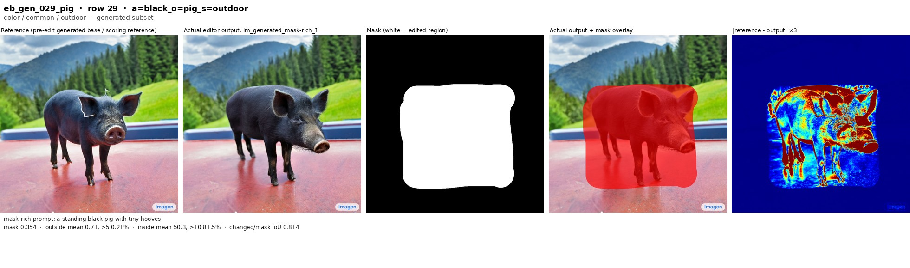
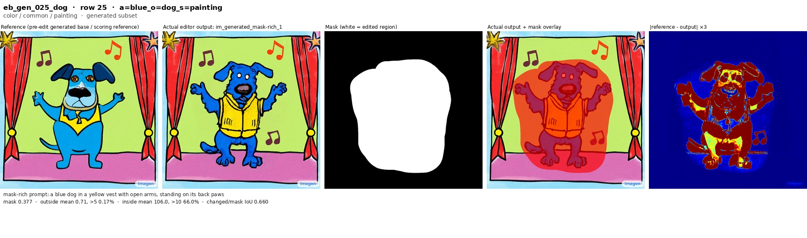
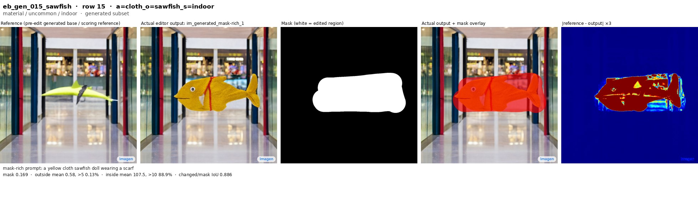
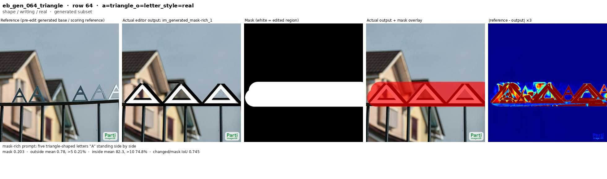
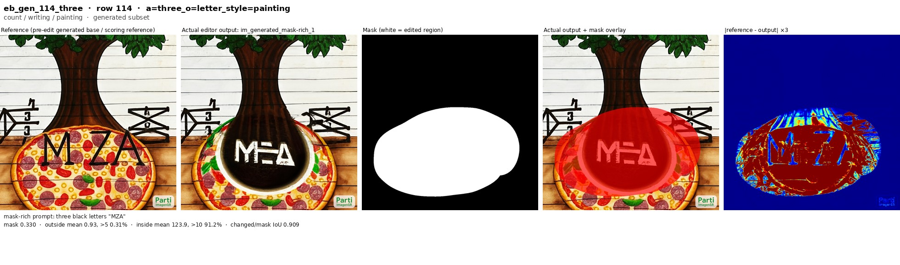

EditBench 生成图局部编辑核验
5 组 generated 子集；reference（编辑前底图）/ mask / Imagen Editor 实际输出
（im_generated_mask-rich_1）。预览由 reference、实际输出、mask、mask overlay、diff ×3 五栏组成。
结论：5/5 组 mask 外近似不变、mask 内大幅变化；可用于“AI 生成图随后被局部编辑”的评测。
但 reference 不是编辑后图，实际输出是 im_generated_mask-rich_1。
eb_gen_029_pig
row 29 · color/common/outdoor
· mask 0.354 · outside mean 0.71
(>5 0.21%) · inside mean 50.3
(>10 81.5%) · IoU 0.814
mask-rich prompt: a standing black pig with tiny hooves
reference: reference_generated/a=black_o=pig_s=outdoor.png
mask: mask_generated/a=black_o=pig_s=outdoor.png
actual editor output: im_generated_mask-rich_1/a=black_o=pig_s=outdoor.png

eb_gen_025_dog
row 25 · color/common/painting
· mask 0.377 · outside mean 0.71
(>5 0.17%) · inside mean 106.0
(>10 66.0%) · IoU 0.660
mask-rich prompt: a blue dog in a yellow vest with open arms, standing on its back paws
reference: reference_generated/a=blue_o=dog_s=painting.png
mask: mask_generated/a=blue_o=dog_s=painting.png
actual editor output: im_generated_mask-rich_1/a=blue_o=dog_s=painting.png

eb_gen_015_sawfish
row 15 · material/uncommon/indoor
· mask 0.169 · outside mean 0.58
(>5 0.13%) · inside mean 107.5
(>10 88.9%) · IoU 0.886
mask-rich prompt: a yellow cloth sawfish doll wearing a scarf
reference: reference_generated/a=cloth_o=sawfish_s=indoor.png
mask: mask_generated/a=cloth_o=sawfish_s=indoor.png
actual editor output: im_generated_mask-rich_1/a=cloth_o=sawfish_s=indoor.png

eb_gen_064_triangle
row 64 · shape/writing/real
· mask 0.203 · outside mean 0.78
(>5 0.21%) · inside mean 82.3
(>10 74.8%) · IoU 0.745
mask-rich prompt: five triangle-shaped letters "A" standing side by side
reference: reference_generated/a=triangle_o=letter_style=real.png
mask: mask_generated/a=triangle_o=letter_style=real.png
actual editor output: im_generated_mask-rich_1/a=triangle_o=letter_style=real.png

eb_gen_114_three
row 114 · count/writing/painting
· mask 0.330 · outside mean 0.93
(>5 0.31%) · inside mean 123.9
(>10 91.2%) · IoU 0.909
mask-rich prompt: three black letters "MZA"
reference: reference_generated/a=three_o=letter_style=painting.png
mask: mask_generated/a=three_o=letter_style=painting.png
actual editor output: im_generated_mask-rich_1/a=three_o=letter_style=painting.png
